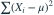

正态总体均值 μ 已知、方差未知。关于方差的充分统计量是？
- A
- B

- C

- D
我已思考，展开答案与解析
正确答案：B
- 似然中关于方差与数据共同的部分只通过 出现。这里中心应使用已知μ。
易错提醒先明确分布参数、独立性和统计量的定义，再进行计算。
南审 813 · 2024 · 第1页 一·2(2)；从大题提取考点并重写为单选
单选改编；题干与选项已重新编排
查看参考来源

南审 813 · 2024 · 第1页 一·2(2)；从大题提取考点并重写为单选
单选改编；题干与选项已重新编排
查看参考来源